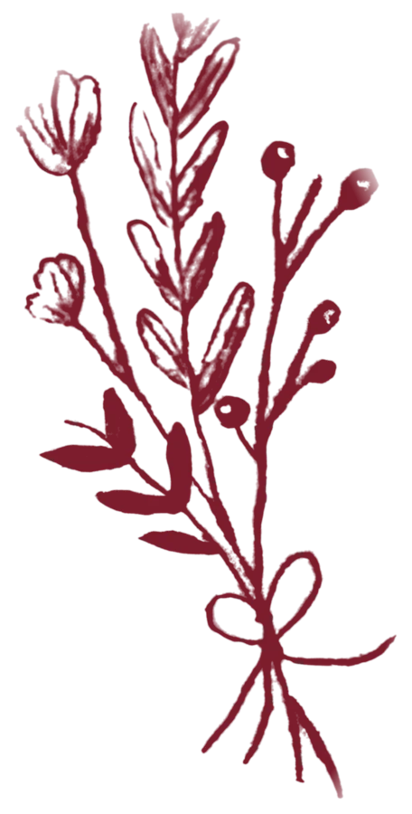
- Fine line floral
- Preto e cinza
- Tatuadora desde 2020
- Londrina, PR
- 2ª Golden Tattoo
- Avaliação gratuita
Vall Gonçalves
Seu corpo é sua casa. Vamos decorar?
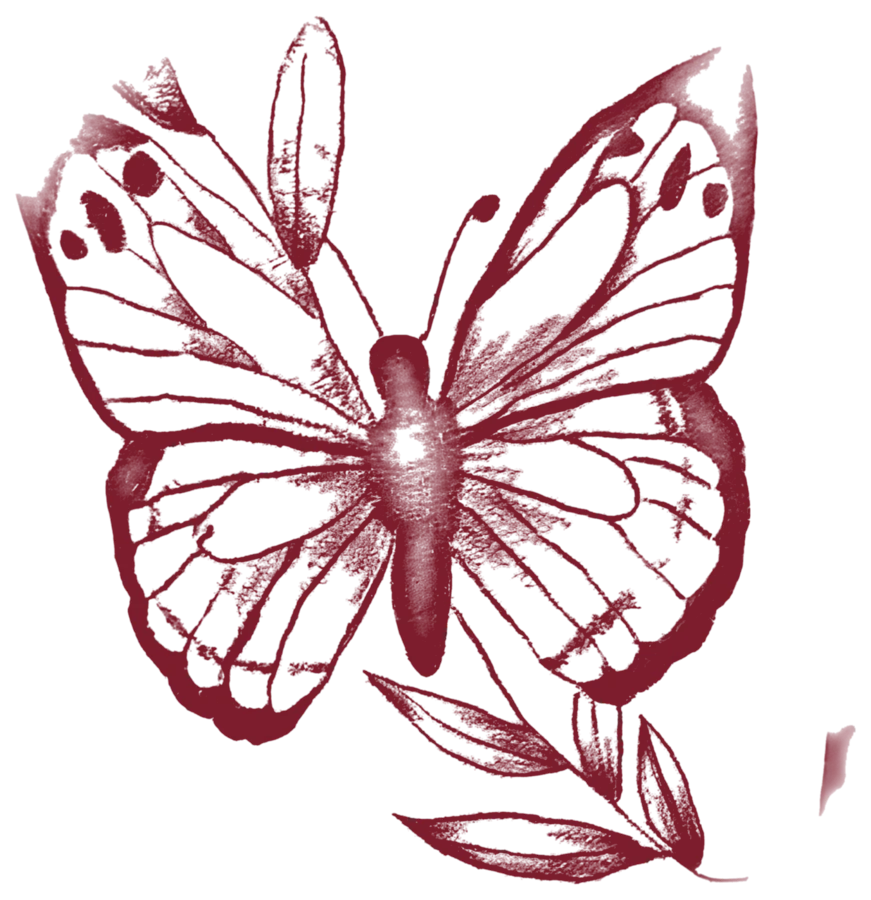
Trabalhos
Flores, bichos, rostos e escritas em linha fina e sombra suave, desenhados do jeitinho de cada cliente.
Cicatrizada, do mesmo jeito
Linha fina só vale se continuar bonita depois de meses. Estas são fotos das clientes com a pele já cicatrizada.
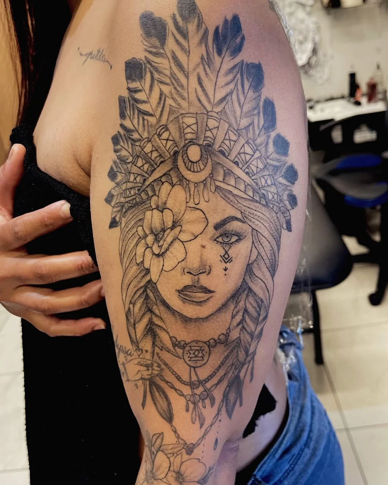
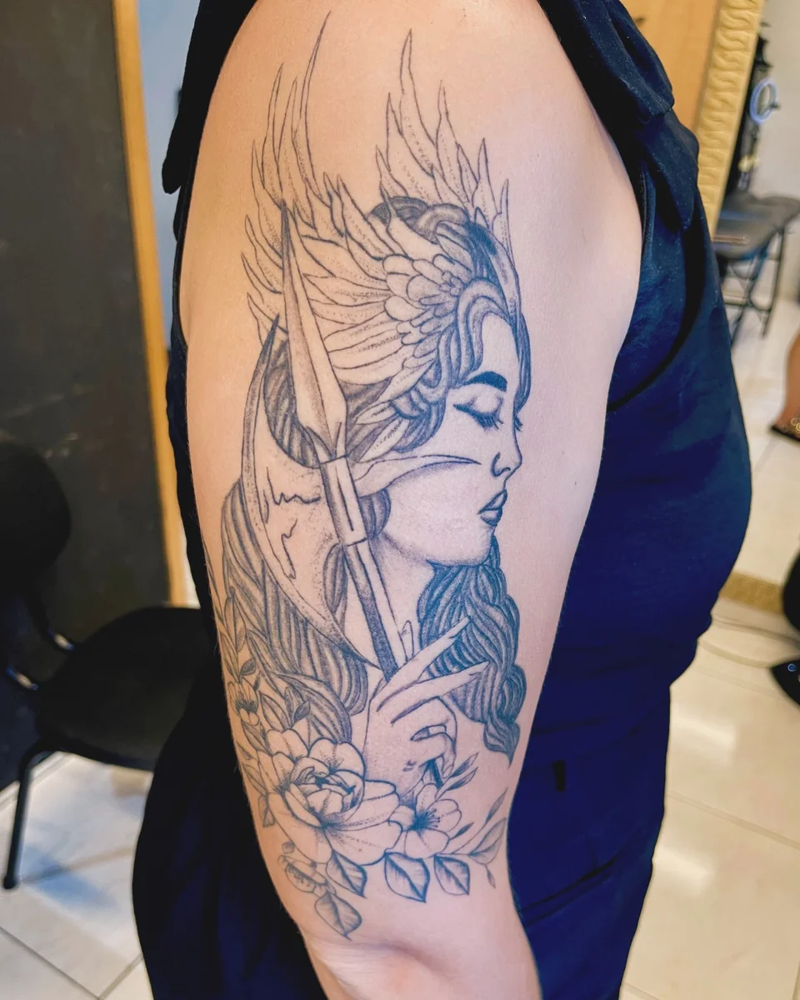
Eu não tatuei só a pele. Tatuei história.
Filhos, pets, mãe e fé. Homenagens desenhadas a partir da foto e da história que você trouxer.
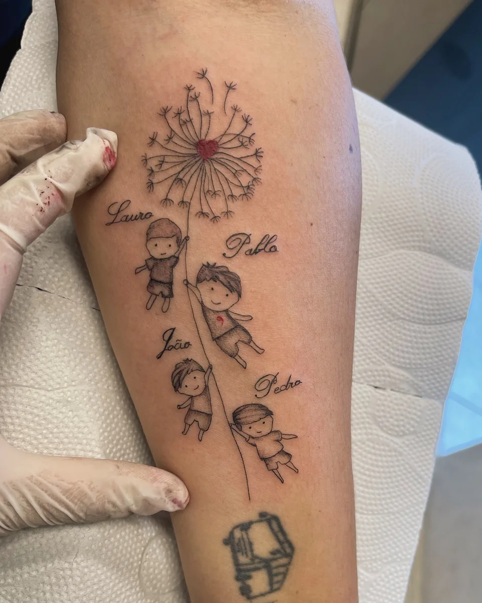
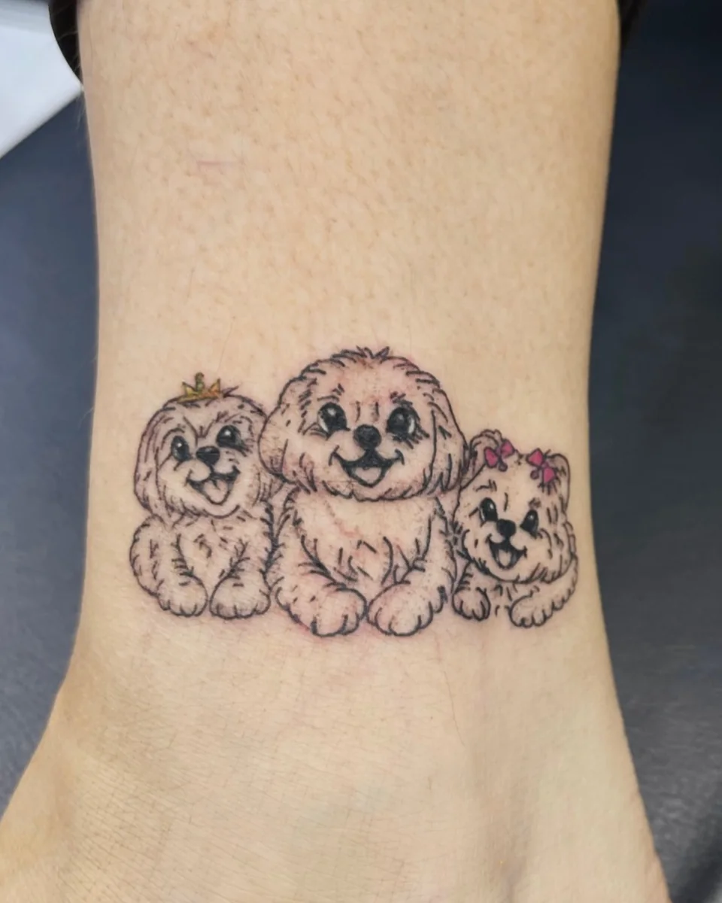
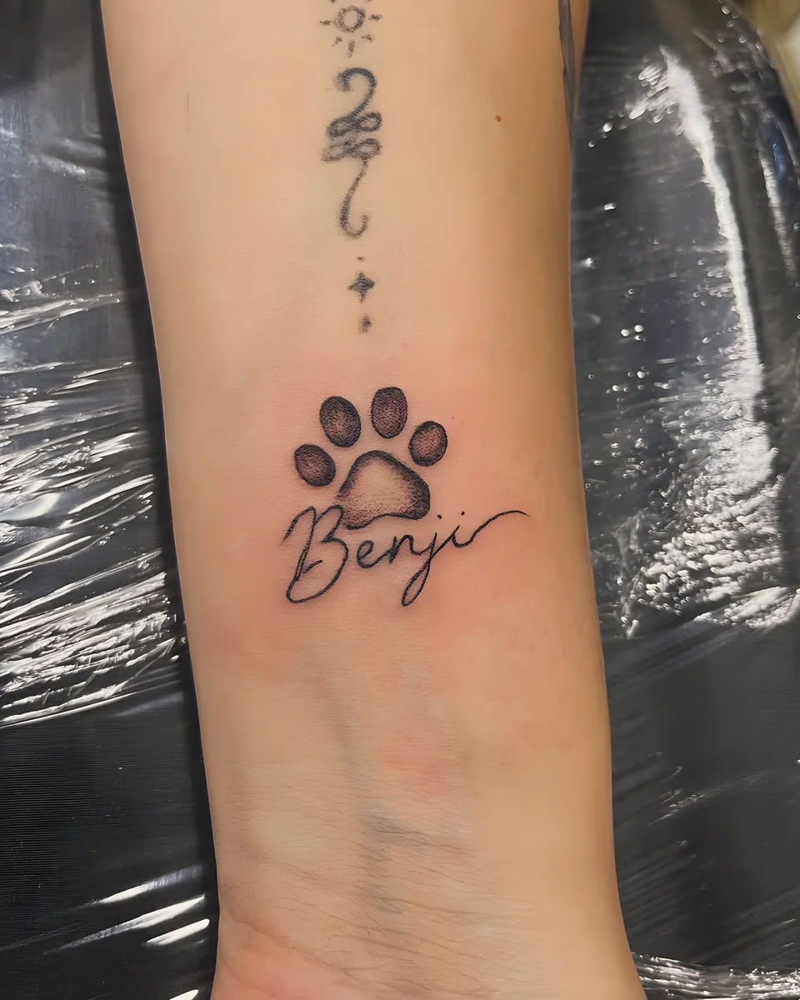
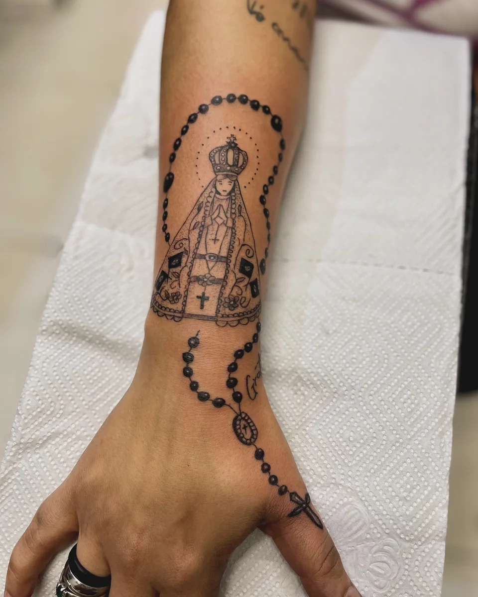
A Vall
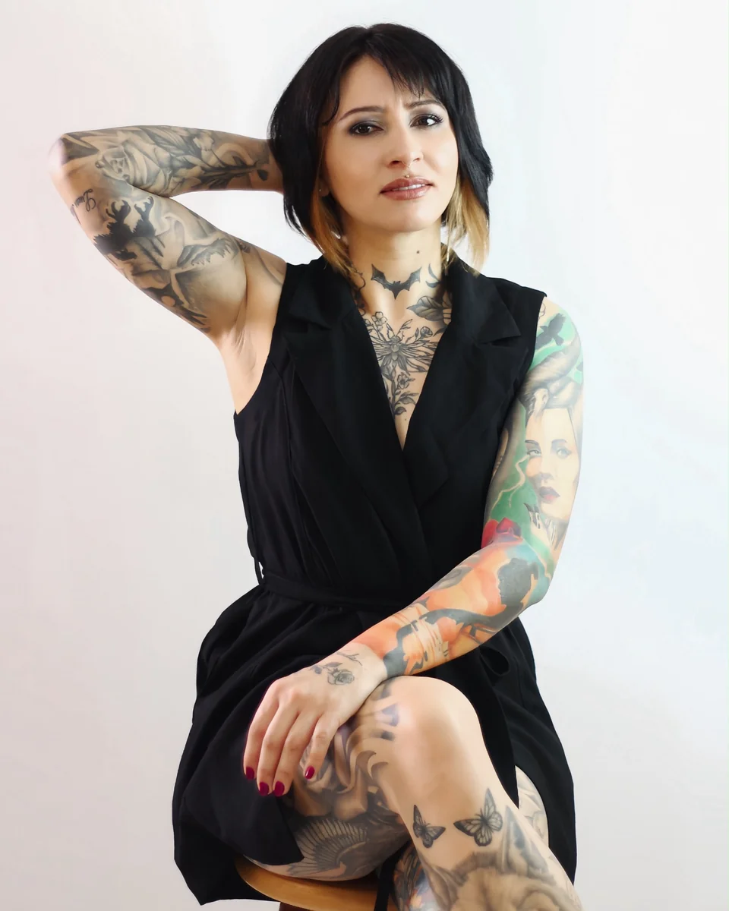
Tatuo desde 2020 em Londrina. O que mais sai da minha máquina é floral em linha fina com sombra suave: rosas, girassóis, borboletas, e bichos e rostos rodeados de flores.
Cada desenho é feito do seu jeitinho, a partir da sua ideia, da parte do corpo e do tamanho. Trabalho com higiene, precisão e muito respeito à sua pele, num ambiente seguro e acolhedor.
Também sou tatuada da cabeça aos pés, e foi assim que cheguei às passarelas de Miss Tattoo.
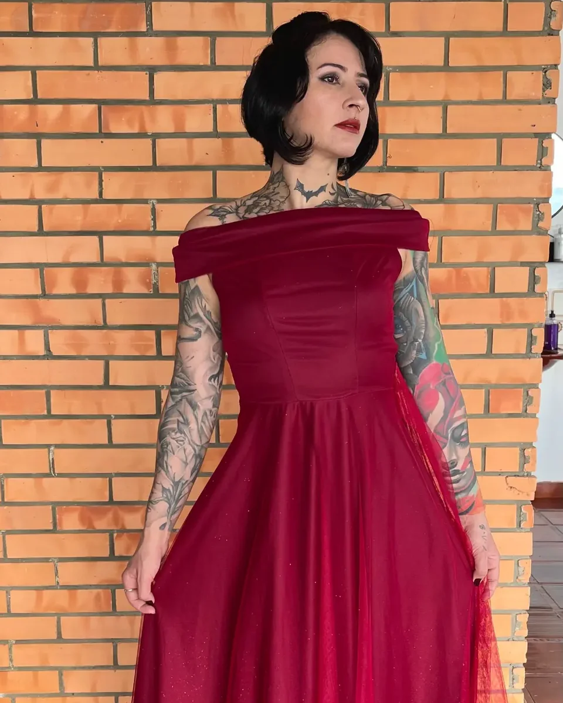
- 2ª Golden TattooMiss Golden Tattoo
- Duquesa da TatuagemMiss Golden Tattoo
- Miss SimpatiaMiss Tattoo Online 2025
- Modelo oficialMusas Tatuadas
O estúdio
Em Londrina, no Paraná, dividido com o tatuador Bruno Maestro.
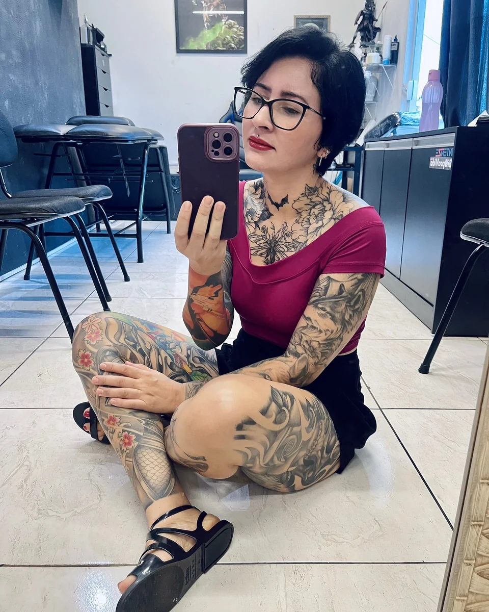
- Avaliação gratuitaVocê mostra a ideia e o lugar, a gente acerta tamanho e valor antes de marcar.
- Desenho exclusivoNada de cópia de catálogo: o desenho nasce da sua referência.
- Material descartávelAgulhas e biqueiras abertas na sua frente, ambiente limpo e organizado.
- Cuidados depoisVocê sai com as orientações de cicatrização e a pomada certa à venda no estúdio.
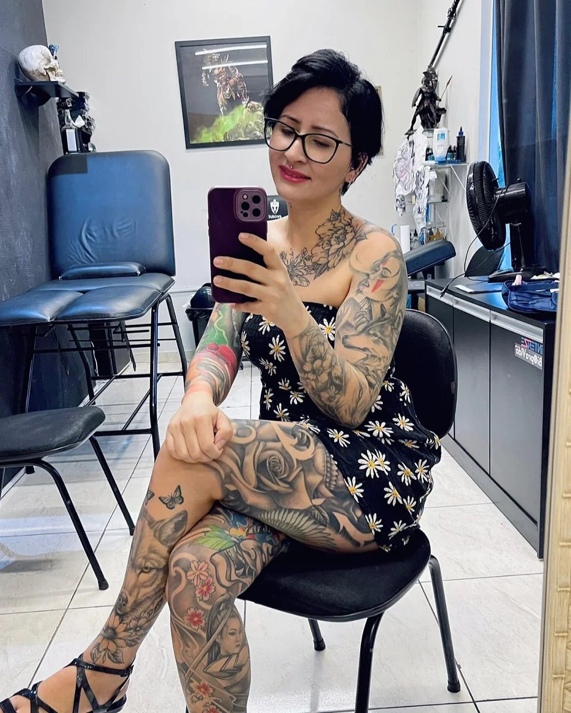
Londrina, PR · endereço enviado na confirmação do horário
Pedir orçamento
O orçamento e a avaliação são gratuitos. Responda abaixo e a mensagem já sai pronta no WhatsApp da Vall.
- Conte a ideiaTema, estilo e a referência que tiver.
- Local e tamanhoOnde no corpo e mais ou menos quantos centímetros.
- Desenho e valorA Vall prepara o desenho e passa o orçamento.
- Dia marcadoVocê escolhe o horário e vem tatuar.